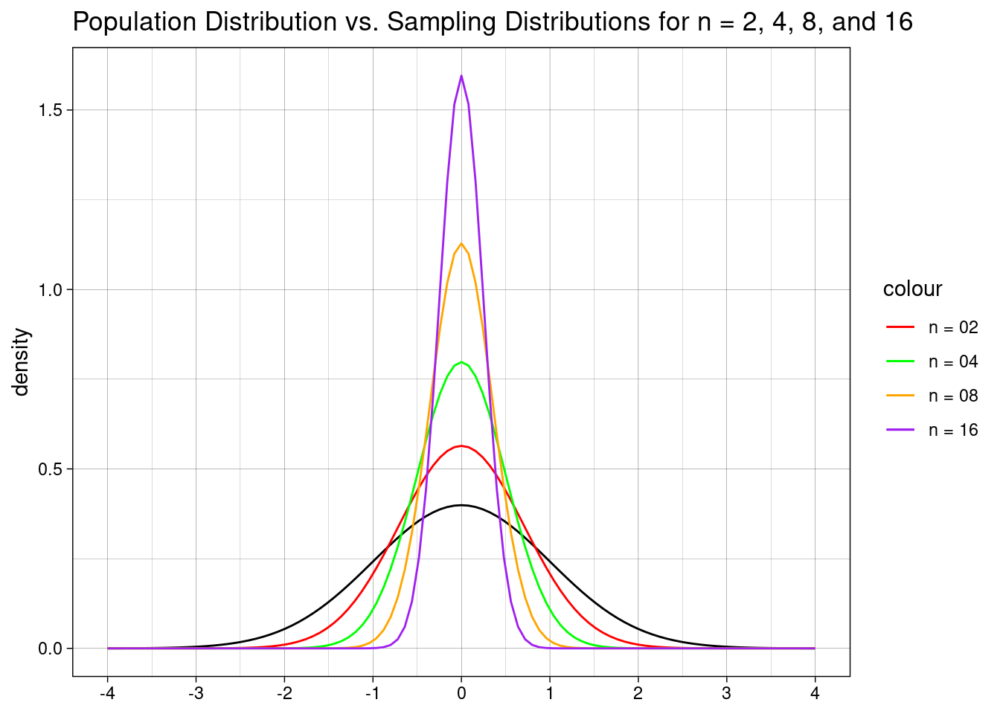
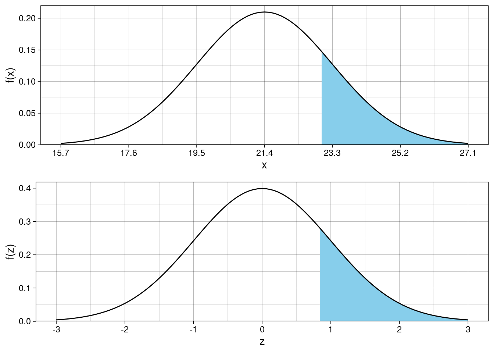
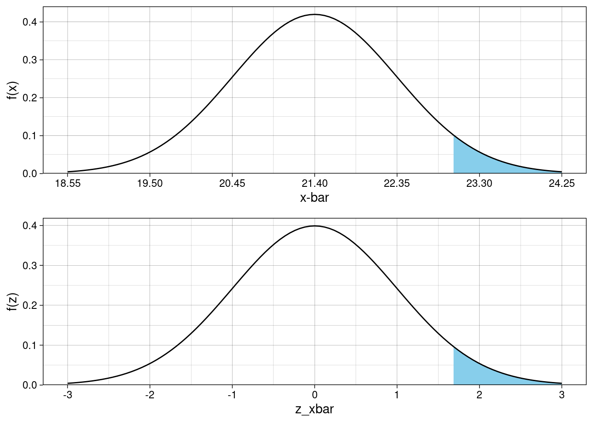
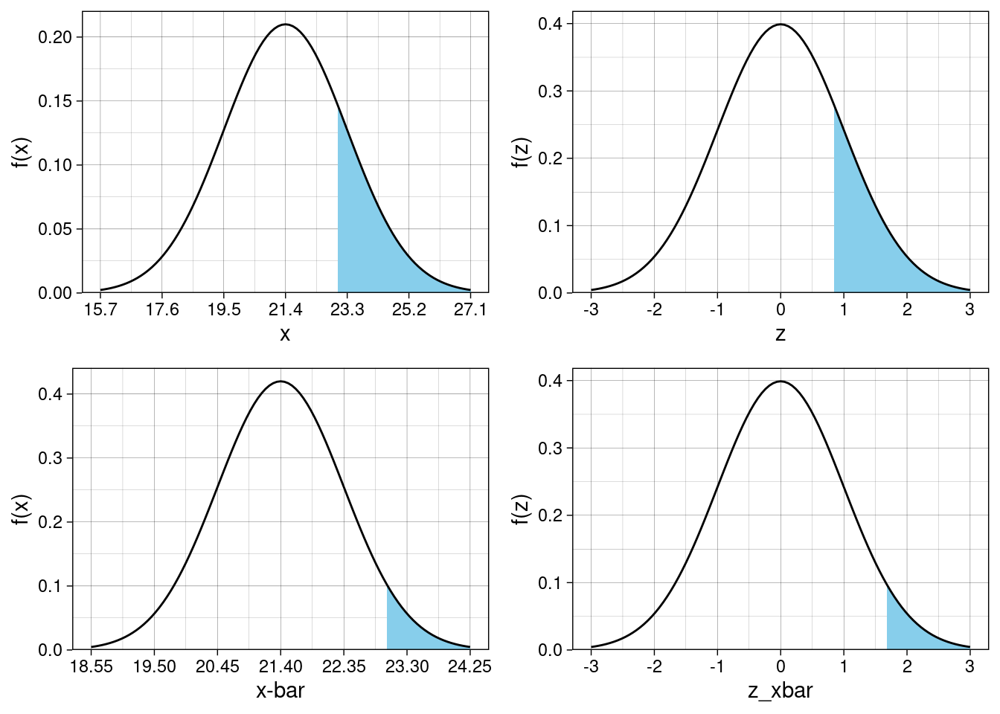

R Code for JB Statistics Video Lessonlibrary(tidyverse)
library(knitr)
library(kableExtra)
library(gridExtra)Let \(\mu\) be the mean and \(\sigma\) be the standard deviation of a population. Let the random variable \(\bar{X}\) represent the sample mean of \(n\) independently drawn observations (i.e., a random sample of size \(n\)). The mean, variance, and standard deviation of the variable \(\bar{X}\) (“x-bar”) are given by the following expressions:
\[E(\bar{x}) = \mu_{\bar{x}} = \mu\]
\[Var(\bar{x}) = \sigma^2_{\bar{x}} = \frac{\sigma^2}{n}\]
\[SD(\bar{x}) = \sqrt{Var(\bar{x})} = \sigma_{\bar{x}} = \frac{\sigma}{\sqrt{n}}\]
The plot and table demonstrate how variability changes as the sample size grows larger. How much do we have to increase the sample size (what multiple) in order to cut the standard deviation in half? Notice the patterns in the plotting code.
# enter the population parameters
mu <- 0
sigma <- 1
# plotting limits for the x-axis
lower <- (mu - 4 * sigma)
upper <- (mu + 4 * sigma)
curvesplot <- ggplot() +
stat_function(
fun = dnorm, # population curve
args = list(mu, sigma),
xlim = c(lower, upper)
) +
stat_function(
fun = dnorm, # x-bar when n = 2
args = list(mu, sigma / sqrt(2)),
xlim = c(lower, upper),
aes(color = "n = 02")
) +
stat_function(
fun = dnorm, # x-bar when n = 4
args = list(mu, sigma / sqrt(4)),
xlim = c(lower, upper),
aes(color = "n = 04")
) +
stat_function(
fun = dnorm, # x-bar when n = 8
args = list(mu, sigma / sqrt(8)),
xlim = c(lower, upper),
aes(color = "n = 08")
) + # x-bar when n = 8
stat_function(
fun = dnorm, # x-bar when n = 16
args = list(mu, sigma / sqrt(16)),
xlim = c(lower, upper),
aes(color = "n = 16")
) +
scale_x_continuous(breaks = seq(lower, upper, sigma)) +
scale_color_manual(values = c(
"n = 02" = "red",
"n = 04" = "green",
"n = 08" = "orange",
"n = 16" = "purple"
)) +
labs(
title = "Population Distribution vs. Sampling Distributions for n = 2, 4, 8, and 16",
x = NULL, y = "density"
) +
theme_linedraw()curvesplot
tibble(
n = c(1, 2, 4, 8, 16),
SD = sigma / sqrt(n)
) %>%
kable(
digits = 4,
align = c("c", "c")
) %>%
kable_styling(
full_width = FALSE,
position = "left",
font_size = 14
)| n | SD |
|---|---|
| 1 | 1.0000 |
| 2 | 0.7071 |
| 4 | 0.5000 |
| 8 | 0.3536 |
| 16 | 0.2500 |
Quadrupling the sample size cuts the standard deviation in half. Notice this for \(n = \{1, 4, 16\}\), as well as for \(n = \{2, 8\}\).
# population parameters
mu <- 21.4
sigma <- 1.9
# the value of interest
x <- 23.0
# area to the right of chosen x value
pnorm(x, mu, sigma, lower.tail = FALSE)[1] 0.1998645# area to the right of standardized x
z <- (x - mu) / sigma
pnorm(z, 0, 1, lower.tail = FALSE)[1] 0.1998645LB <- mu - 3 * sigma # lower limit for plotting
UB <- mu + 3 * sigma # upper limit for plotting
plotX <- ggplot() +
stat_function(
fun = dnorm,
args = list(mu, sigma),
geom = "area",
xlim = c(x, UB),
fill = "skyblue"
) +
stat_function(
fun = dnorm,
args = list(mu, sigma)
) +
scale_x_continuous(
limits = c(LB, UB),
breaks = seq(from = LB, to = UB, by = sigma)
) +
scale_y_continuous(expand = expansion(mult = c(0, 0.05))) +
labs(x = "x", y = "f(x)") +
theme_linedraw()
plotZ <- ggplot() +
stat_function(
fun = dnorm,
args = list(0, 1),
geom = "area",
xlim = c(z, 3),
fill = "skyblue"
) +
stat_function(fun = dnorm, args = list(0, 1)) +
scale_x_continuous(
limits = c(-3, 3),
breaks = seq(from = -3, to = 3, by = 1)
) +
scale_y_continuous(expand = expansion(mult = c(0, 0.05))) +
labs(x = "z", y = "f(z)") +
theme_linedraw()grid.arrange(plotX, plotZ)
mu <- 21.4
sigma <- 1.9
n <- 4
x_bar <- 23.0
# area to the right of chosen x-bar value
sigma_xbar <- sigma / sqrt(n)
pnorm(x_bar, mu, sigma_xbar, lower.tail = FALSE)[1] 0.04607049# area to the right of standardized x-bar
z_xbar <- (x_bar - mu) / sigma_xbar
pnorm(z_xbar, 0, 1, lower.tail = FALSE)[1] 0.04607049LB <- mu - 3 * sigma_xbar # lower limit for plotting
UB <- mu + 3 * sigma_xbar # upper limit for plotting
plotXbar <- ggplot() +
stat_function(
fun = dnorm,
args = list(mu, sigma_xbar),
geom = "area",
xlim = c(x_bar, UB),
fill = "skyblue"
) +
stat_function(
fun = dnorm,
args = list(mu, sigma_xbar)
) +
scale_x_continuous(
limits = c(LB, UB),
breaks = seq(from = LB, to = UB, by = sigma_xbar)
) +
scale_y_continuous(expand = expansion(mult = c(0, 0.05))) +
labs(x = "x-bar", y = "f(x)") +
theme_linedraw()
plotZbar <- ggplot() +
stat_function(
fun = dnorm,
args = list(0, 1),
geom = "area",
xlim = c(z_xbar, 3),
fill = "skyblue"
) +
stat_function(
fun = dnorm,
args = list(0, 1)
) +
scale_x_continuous(
limits = c(-3, 3),
breaks = seq(from = -3, to = 3, by = 1)
) +
scale_y_continuous(expand = expansion(mult = c(0, 0.05))) +
labs(x = "z_xbar", y = "f(z)") +
theme_linedraw()grid.arrange(plotXbar, plotZbar)
grid.arrange(plotX, plotZ, plotXbar, plotZbar)
tibble(
value = c(
"x = 23.0",
"z-score of x",
"x-bar = 23.0",
"z-score of x-bar"
),
"probability of being at least that value" = c(
pnorm(x, mu, sigma, lower.tail = FALSE),
pnorm(z, 0, 1, lower.tail = FALSE),
pnorm(x_bar, mu, sigma_xbar, lower.tail = FALSE),
pnorm(z_xbar, 0, 1, lower.tail = FALSE)
)
) %>%
kable(
digits = 4,
align = c("c", "c")
) %>%
kable_styling(
full_width = FALSE,
position = "left",
font_size = 14
)| value | probability of being at least that value |
|---|---|
| x = 23.0 | 0.1999 |
| z-score of x | 0.1999 |
| x-bar = 23.0 | 0.0461 |
| z-score of x-bar | 0.0461 |
sessionInfo()R version 3.6.0 (2019-04-26)
Platform: x86_64-redhat-linux-gnu (64-bit)
Running under: Red Hat Enterprise Linux
Matrix products: default
BLAS/LAPACK: /usr/lib64/R/lib/libRblas.so
locale:
[1] LC_CTYPE=en_US.UTF-8 LC_NUMERIC=C
[3] LC_TIME=en_US.UTF-8 LC_COLLATE=en_US.UTF-8
[5] LC_MONETARY=en_US.UTF-8 LC_MESSAGES=en_US.UTF-8
[7] LC_PAPER=en_US.UTF-8 LC_NAME=C
[9] LC_ADDRESS=C LC_TELEPHONE=C
[11] LC_MEASUREMENT=en_US.UTF-8 LC_IDENTIFICATION=C
attached base packages:
[1] stats graphics grDevices utils datasets methods base
other attached packages:
[1] gridExtra_2.3 kableExtra_1.3.4 knitr_1.34 forcats_0.5.1
[5] stringr_1.4.0 dplyr_1.0.7 purrr_0.3.4 readr_2.0.1
[9] tidyr_1.1.3 tibble_3.1.4 ggplot2_3.3.5 tidyverse_1.3.1
loaded via a namespace (and not attached):
[1] Rcpp_1.0.7 svglite_2.0.0 lubridate_1.7.10 assertthat_0.2.1
[5] digest_0.6.27 utf8_1.2.2 R6_2.5.1 cellranger_1.1.0
[9] backports_1.2.1 reprex_2.0.1 evaluate_0.14 highr_0.9
[13] httr_1.4.2 pillar_1.6.2 rlang_0.4.11 readxl_1.3.1
[17] rstudioapi_0.13 jquerylib_0.1.4 rmarkdown_2.11 labeling_0.4.2
[21] webshot_0.5.2 munsell_0.5.0 broom_0.7.9 compiler_3.6.0
[25] modelr_0.1.8 xfun_0.26 pkgconfig_2.0.3 systemfonts_1.0.2
[29] htmltools_0.5.2 tidyselect_1.1.1 fansi_0.5.0 viridisLite_0.4.0
[33] crayon_1.4.1 tzdb_0.1.2 dbplyr_2.1.1 withr_2.4.2
[37] grid_3.6.0 jsonlite_1.7.2 gtable_0.3.0 lifecycle_1.0.0
[41] DBI_1.1.1 magrittr_2.0.1 scales_1.1.1 cli_3.0.1
[45] stringi_1.7.4 farver_2.1.0 fs_1.5.0 xml2_1.3.2
[49] bslib_0.3.0 ellipsis_0.3.2 generics_0.1.0 vctrs_0.3.8
[53] tools_3.6.0 glue_1.4.2 hms_1.1.0 fastmap_1.1.0
[57] yaml_2.2.1 colorspace_2.0-2 rvest_1.0.1 haven_2.4.3
[61] sass_0.4.0